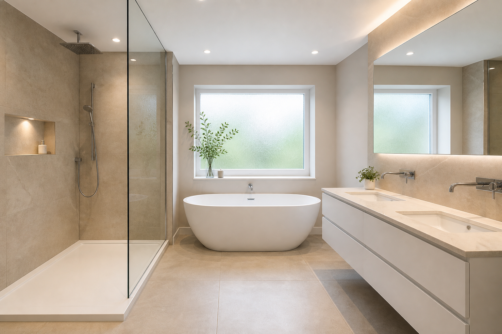

Luxury Master Bathroom Remodel Ideas: Natural Light & Spa Layouts
The best luxury master bathroom remodel plans do not rely on expensive materials alone. They engineer comfort: bright bathroom natural light, thoughtful privacy, layered lighting, and a layout that makes the room feel calm instead of cluttered. When you want that full package executed on site, luxury bathroom remodel pros can coordinate glazing, electrical, and wet-area sequencing.
The spa layout formula: tub, shower, vanity triangle
Luxury bathrooms usually organize around three anchors: a generous shower, a soaking tub (if you want one), and a vanity zone with strong task lighting. The “triangle†is not a rule, but it is a helpful mental model: minimize crossed traffic and keep wet zones grouped.
Add a fourth anchor in real life: storage. Without a place for towels, skincare, and backup supplies, even expensive stone starts to feel chaotic.
Windows: brightness without awkward exposure
Natural light is a major reason spa bathrooms photograph well. In real homes, the priority is comfort: you should be able to enjoy brightness without feeling exposed. Frosted glazing, clerestory concepts, and thoughtful blind choices are all valid tools.
Orientation matters. South- and west-facing glass can overheat finishes and fade textiles; north-facing light is softer for makeup but may need warmer bulbs at night.
Layered lighting that feels high-end
Recessed ceiling lights can illuminate the overall room, but vanity grooming benefits from dedicated task lighting. Dimmers help a bathroom transition from morning routines to evening relaxation.
Consider a small accent on a feature wall or niche grazing light—just enough to give the eye a destination without turning the room into a nightclub.
Finishes that stay timeless in search-friendly content
Neutral palettes tend to age well and keep photography consistent. Consistent metal finishes across shower, tub filler, and vanity hardware reads “intentional†in both real life and thumbnails.
Texture prevents flatness: matte tile with a subtle handmade variation, or a fluted vanity detail, adds depth when color stays quiet.
Humidity control in large wet rooms
When showers and tubs are generous, moisture management should be equally serious. Discuss ventilation performance with your bathroom remodeling contractor based on room volume and real usage patterns.
Doors left open to bedrooms or closets can steer humidity where you do not want it. A short vestibule or solid door strategy can protect adjacent finishes.
Double vanity rhythm and symmetry
Double vanities read luxurious when spacing feels human, not squeezed. Two sinks with one shared mirror can work; two mirrors often look more tailored if wall length allows.
Align drawer banks so daily clutter has a home—charging drawers, divided organizers, and pull-out trays prevent the “hotel lobby” look of everything on the counter.
Outlets, tech, and morning routines
Plan GFCI outlets where you actually dry hair, charge toothbrushes, and run occasional gadgets. In-drawer outlets are popular but must meet code-clear locations.
If you want integrated speakers or smart switches, rough those paths before drywall. Retrofit fishing through insulation is slow and expensive.
Heated floors and tactile comfort
Radiant heat under tile is a quiet luxury that sells the spa story on cold mornings. Confirm how the system interacts with waterproofing in wet areas and whether your electrical panel has capacity.
Programmable thermostats or smart controls help avoid leaving heat on all day while still welcoming feet at wake-up time.
Photography, resale, and staying power
Luxury remodels should still feel calm five years later. Trend-chasing paint colors and ultra-specific niche sizes age faster than good daylight, storage, and ventilation.
When you work with luxury bathroom remodel pros, ask how choices read in listing photos: contrast, mirror reflections, and sightlines into the shower matter more than you might expect.
FAQ
How do you add natural light without sacrificing privacy?
Use obscured glazing, smart placement, and shading solutions matched to your orientation.
Is recessed lighting enough?
Usually not by itself. Layer task and ambient lighting for a luxury feel.
Should a luxury master bath have a water closet?
Many homeowners want one for privacy and resale. If space is tight, a pocket door can help—plan blocking early.
Are skylights worth it?
They can add dramatic daylight but require leak-conscious flashing and sometimes shading. Tub placement under a skylight is popular—confirm privacy from above if that matters to you.